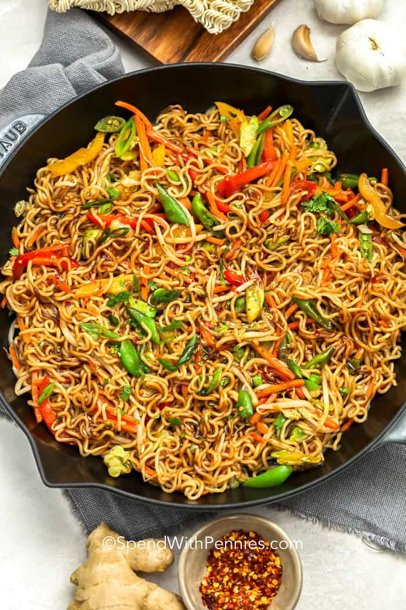

Ramen Stir Fry

Ingredients
- 2 packages or instant ramen noodles
- 1 teaspoon Sriracha
- 1 tablespoon toasted sesame oil
- 1 cup diced onioin
- 3 cloves of garlic, minced
- 2 green onions, thinly sliced
- tablespoon of vegetable oil
Directions
- Cook ramen noodles, 3-4 minutes
- Add vegetable oil to large pan
- Add additonal ingredients to pan
- Heat on medium stirring often, allow oil to fry ingedients
- Stir in cooked ramen noodles in pan
- Allow ramen noodles to cook in pan for a few minutes
- Enjoy!
Check out a similar Recipe
Contact Me
Have questions?
Email me!
32 Campus Drive
Missoula, MT
59812